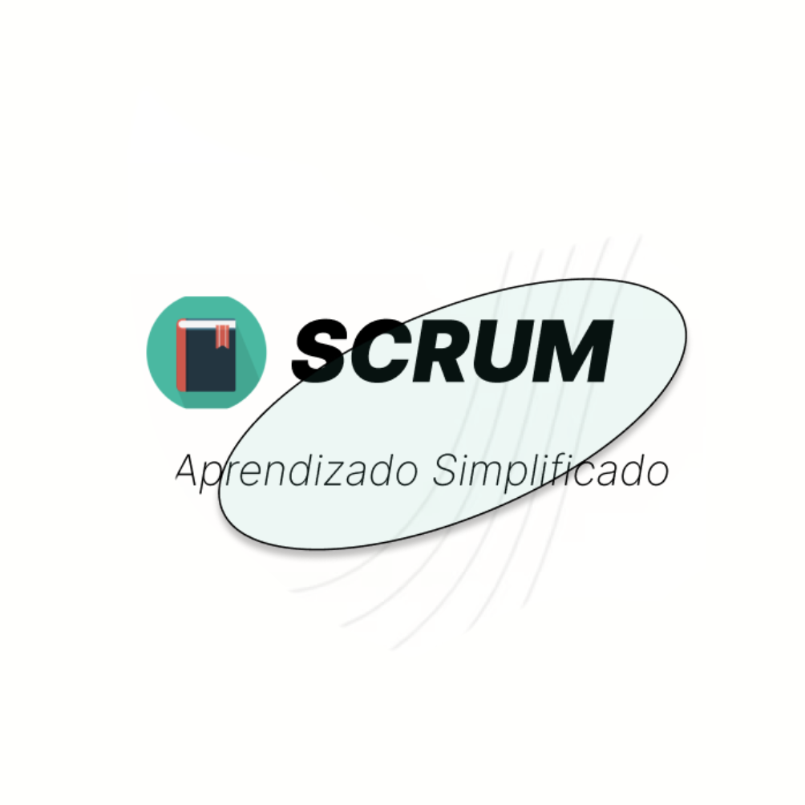

1DSM · 1º sem. 202301 / PROJETO ACADÊMICO
Scrumer Data
Site de treinamento em Scrum, com explicações sobre a metodologia e exemplos de sua aplicação em projetos de TI.
Minha contribuição
Desenhei telas no Figma e desenvolvi algumas páginas do site.
Tecnologias do projeto
- HTML
- CSS
- JavaScript
- Figma